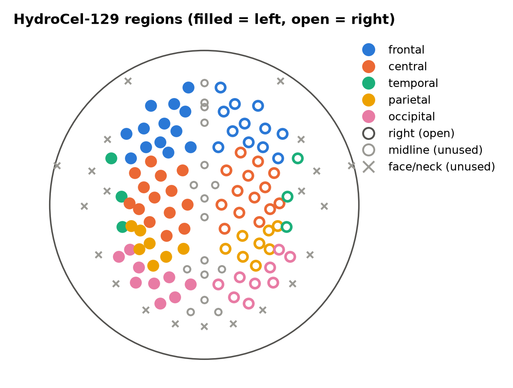

Features#
All 288 features are computed per participant and without labels, so they cannot leak test information. Everything that learns from data happens inside the cross-validation loop.
Regions#
There are ten regions: frontal, central, temporal, parietal and occipital, each split into left and right. Each HydroCel electrode goes to the region of its nearest 10–10 anchor on the fitted head sphere. Midline electrodes and the lower face/neck ring (more than 115° from the vertex) are not used.
Regions differ in size:
Region |
Electrodes per side |
|---|---|
Central |
14 |
Frontal |
12–13 |
Occipital |
9 |
Parietal |
7–8 |
Temporal |
3 |
The temporal regions are therefore the noisiest, and they are the closest to the temporalis muscle.


Fig. 1 Electrode-to-region assignment.#
Feature dictionary#
Name pattern |
\(n\) |
Definition |
|---|---|---|
|
50 |
\(\log_{10}\) absolute Welch power in delta 1–4, theta 4–8, alpha 8–13, beta 13–30 and low gamma 30–40 Hz |
|
50 |
Band power divided by 1–40 Hz power. The five bands of a region are nearly collinear |
|
2 |
Frontal alpha asymmetry, \(\ln\alpha_R-\ln\alpha_L\) (E124/E24, E122/E33) |
|
12 |
N170 minimum and its latency at 140–200 ms, around P7/P8, per condition |
|
6 |
P300 mean amplitude (250–500 ms) and peak latency around Pz |
|
3 |
Late positive potential, mean amplitude 400–600 ms around Pz |
|
135 |
Weighted phase-lag index between region-mean signals, in theta, alpha and beta (45 pairs × 3) |
|
30 |
Sample entropy (\(m=2\), \(r=0.2\) SD), Higuchi fractal dimension (\(k_{max}=10\)) and normalised Lempel–Ziv complexity, over up to 100 2-s segments |
Warning
Peak latencies inside fixed windows are fragile. In 34% of participant–condition–side combinations, the N170 minimum fell on the 200 ms window edge. In 24%, the P300 maximum fell on the 250 ms edge. Treat the latency features as low-validity measures.
Trial-level representations#
Riemannian models use the ten region-mean signals of each epoch (10 × 201 samples).
Deep networks use the full 129 × 201 epochs.
Source: spectral features
"""Potencia espectral por banda (Welch) por canal y por región, y asimetría alfa frontal."""
from __future__ import annotations
import numpy as np
from scipy.signal import welch
BANDS = {"delta": (1.0, 4.0), "theta": (4.0, 8.0), "alpha": (8.0, 13.0), "beta": (13.0, 30.0),
"lowgamma": (30.0, 40.0)}
TOTAL = (1.0, 40.0)
def psd_welch(data: np.ndarray, sfreq: float, seg_len_s: float = 2.0) -> tuple[np.ndarray, np.ndarray]:
"""PSD media sobre segmentos. ``data``: (n_segments, n_channels, n_times) -> (n_channels, n_freqs)."""
nper = min(int(seg_len_s * sfreq), data.shape[-1])
freqs, pxx = welch(data, fs=sfreq, nperseg=nper, noverlap=nper // 2, axis=-1)
return freqs, pxx.mean(axis=0)
def band_power(freqs: np.ndarray, psd: np.ndarray, bands: dict = BANDS) -> dict[str, np.ndarray]:
"""Potencia absoluta (integral de la PSD) por banda, por canal."""
out = {}
for name, (lo, hi) in bands.items():
m = (freqs >= lo) & (freqs < hi)
out[name] = np.trapezoid(psd[..., m], freqs[m], axis=-1)
return out
def spectral_features(data: np.ndarray, sfreq: float, ch_names: list[str], regions: dict[str, list[str]],
bands: dict = BANDS) -> tuple[dict[str, float], dict[str, np.ndarray]]:
"""Características espectrales de un sujeto.
Devuelve (features por región, potencia absoluta por canal y banda).
- ``pow_<banda>_<región>``: log10 de la potencia absoluta media de la región (µV²).
- ``rel_<banda>_<región>``: potencia de la banda / potencia total 1-40 Hz.
"""
freqs, psd = psd_welch(data, sfreq)
psd = psd * 1e12 # V²/Hz -> µV²/Hz
bp = band_power(freqs, psd, bands)
total = band_power(freqs, psd, {"total": TOTAL})["total"]
idx = {c: i for i, c in enumerate(ch_names)}
feats: dict[str, float] = {}
for reg, chans in regions.items():
pick = [idx[c] for c in chans if c in idx]
if not pick:
continue
tot = total[pick].mean()
for b in bands:
p = bp[b][pick].mean()
feats[f"pow_{b}_{reg}"] = float(np.log10(p))
feats[f"rel_{b}_{reg}"] = float(p / tot)
return feats, bp
def frontal_alpha_asymmetry(alpha_power: np.ndarray, ch_names: list[str],
pairs: dict[str, tuple[str, str]]) -> dict[str, float]:
"""ln(alfa derecha) - ln(alfa izquierda) para cada par (izq, der)."""
idx = {c: i for i, c in enumerate(ch_names)}
return {f"faa_{name}": float(np.log(alpha_power[idx[r]]) - np.log(alpha_power[idx[left]]))
for name, (left, r) in pairs.items()}
Source: ERP features
"""Componentes de ERP con ventanas fijadas a priori (no derivadas de los datos).
Ventanas (desde la literatura de rostros emocionales):
- N170: 140-200 ms, mínimo en electrodos occipito-temporales (≈P7/P8).
- P300: 250-500 ms, media y latencia del máximo en un clúster centro-parietal (≈Pz).
- LPP: 400-600 ms, media en el mismo clúster.
La LPP se limita a 600 ms por el diseño: el punto de la tarea aparece >= 632 ms después del rostro.
"""
from __future__ import annotations
import numpy as np
WINDOWS = {"n170": (0.140, 0.200), "p300": (0.250, 0.500), "lpp": (0.400, 0.600)}
def _win(times: np.ndarray, lo: float, hi: float) -> np.ndarray:
return (times >= lo - 1e-9) & (times <= hi + 1e-9)
def erp_features(evoked_uv: np.ndarray, times: np.ndarray, ch_names: list[str], clusters: dict[str, list[str]],
prefix: str) -> dict[str, float]:
"""``evoked_uv``: (n_channels, n_times) en µV. ``clusters``: n170_L, n170_R, centroparietal."""
idx = {c: i for i, c in enumerate(ch_names)}
def wave(name):
return evoked_uv[[idx[c] for c in clusters[name] if c in idx]].mean(axis=0)
out: dict[str, float] = {}
m = _win(times, *WINDOWS["n170"])
for side in ("L", "R"):
w = wave(f"n170_{side}")[m]
i = int(np.argmin(w))
out[f"{prefix}_n170{side}_amp"] = float(w[i])
out[f"{prefix}_n170{side}_lat"] = float(times[m][i] * 1000)
cp = wave("centroparietal")
m = _win(times, *WINDOWS["p300"])
out[f"{prefix}_p300_amp"] = float(cp[m].mean())
out[f"{prefix}_p300_lat"] = float(times[m][int(np.argmax(cp[m]))] * 1000)
m = _win(times, *WINDOWS["lpp"])
out[f"{prefix}_lpp_amp"] = float(cp[m].mean())
return out
Source: connectivity and complexity
"""Conectividad (wPLI entre regiones) y complejidad (SampEn, Higuchi, Lempel-Ziv)."""
from __future__ import annotations
from itertools import combinations
import numpy as np
CONN_BANDS = {"theta": (4.0, 8.0), "alpha": (8.0, 13.0), "beta": (13.0, 30.0)}
def region_signals(data: np.ndarray, ch_names: list[str], regions: dict[str, list[str]]) -> tuple[np.ndarray, list[str]]:
"""Promedio de los canales de cada región. ``data``: (..., n_channels, n_times)."""
idx = {c: i for i, c in enumerate(ch_names)}
names, sigs = [], []
for reg, chans in regions.items():
pick = [idx[c] for c in chans if c in idx]
if pick:
names.append(reg)
sigs.append(data[..., pick, :].mean(axis=-2))
return np.stack(sigs, axis=-2), names
def wpli_features(region_data: np.ndarray, region_names: list[str], sfreq: float,
bands: dict = CONN_BANDS) -> dict[str, float]:
"""wPLI por banda entre todos los pares de regiones. ``region_data``: (n_seg, n_reg, n_times)."""
from mne_connectivity import spectral_connectivity_epochs
fmin = tuple(b[0] for b in bands.values())
fmax = tuple(b[1] for b in bands.values())
con = spectral_connectivity_epochs(region_data, method="wpli", mode="multitaper", sfreq=sfreq,
fmin=fmin, fmax=fmax, faverage=True, verbose="error")
mat = con.get_data(output="dense") # (n_reg, n_reg, n_bands), triángulo inferior
out = {}
for bi, band in enumerate(bands):
for i, j in combinations(range(len(region_names)), 2):
out[f"wpli_{band}_{region_names[i]}__{region_names[j]}"] = float(mat[j, i, bi])
return out
def complexity_features(region_data: np.ndarray, region_names: list[str], max_segments: int = 100,
seed: int = 0) -> dict[str, float]:
"""Media sobre segmentos de SampEn, Higuchi FD y Lempel-Ziv (binarizado por la mediana)."""
import antropy as ant
rng = np.random.default_rng(seed)
n = region_data.shape[0]
pick = np.sort(rng.choice(n, size=min(n, max_segments), replace=False))
out = {}
for r, name in enumerate(region_names):
se, hfd, lz = [], [], []
for s in pick:
x = region_data[s, r].astype(np.float64)
se.append(ant.sample_entropy(x, order=2))
hfd.append(ant.higuchi_fd(x, kmax=10))
lz.append(ant.lziv_complexity((x > np.median(x)).astype(int), normalize=True))
out[f"sampen_{name}"] = float(np.nanmean(np.where(np.isfinite(se), se, np.nan)))
out[f"hfd_{name}"] = float(np.mean(hfd))
out[f"lzc_{name}"] = float(np.mean(lz))
return out
Source: regions
"""Mapa de regiones del montaje HydroCel GSN 129 y equivalentes 10-20.
Las regiones se definen con reglas fijas sobre las coordenadas del montaje
(posiciones normalizadas a la esfera unidad, x = derecha, y = anterior,
z = arriba). Así el mapa es reproducible y se documenta con una figura.
"""
from __future__ import annotations
import mne
import numpy as np
import pandas as pd
MONTAGE = "GSN-HydroCel-129"
REGIONS = [f"{lobe}_{side}" for lobe in ("frontal", "central", "temporal", "parietal", "occipital")
for side in ("L", "R")]
# Equivalentes 10-20 = electrodo HydroCel más cercano (ángulo mínimo en la esfera).
# Verificado contra el montaje de MNE en la Fase A.
EQUIV_1020 = {"F3": "E24", "F4": "E124", "F7": "E33", "F8": "E122", "Fz": "E11", "Cz": "Cz",
"Pz": "E62", "P3": "E60", "P4": "E85", "P7": "E58", "P8": "E96", "O1": "E70",
"O2": "E83", "CPz": "E55", "POz": "E72"}
def _sphere_center(p: np.ndarray) -> np.ndarray:
"""Centro de la esfera que mejor ajusta los puntos (mínimos cuadrados lineales)."""
A = np.c_[2 * p, np.ones(len(p))]
b = (p ** 2).sum(axis=1)
sol, *_ = np.linalg.lstsq(A, b, rcond=None)
return sol[:3]
def unit_positions(montage: str = MONTAGE) -> pd.DataFrame:
m = mne.channels.make_standard_montage(montage)
pos = m.get_positions()["ch_pos"]
names = list(pos)
p = np.array([pos[n] for n in names])
p = p - _sphere_center(p)
p /= np.linalg.norm(p, axis=1, keepdims=True)
return pd.DataFrame(p, index=names, columns=["x", "y", "z"])
# Anclas 10-10 por región (hemisferio izquierdo; el derecho es el espejo con número par).
_ANCHORS_L = {
"frontal": ["Fp1", "AF3", "AF7", "F1", "F3", "F5", "F7", "F9"],
"central": ["FC1", "FC3", "FC5", "C1", "C3", "C5", "CP1", "CP3"],
"temporal": ["FT7", "T7", "TP7", "FT9", "T9", "TP9"],
"parietal": ["CP5", "P1", "P3", "P5"],
"occipital": ["P7", "PO3", "PO7", "O1", "P9", "PO9"],
}
MAX_POLAR_DEG = 115.0 # T9/T10 del 10-10 están a ~108° de Cz
_MIDLINE = ["Fpz", "AFz", "Fz", "FCz", "Cz", "CPz", "Pz", "POz", "Oz", "Iz"]
_EXCLUDED = ["Nz", "LPA", "RPA"]
def _mirror(name: str) -> str:
"""Fp1 -> Fp2, AF7 -> AF8, ... (número impar -> par siguiente)."""
head = name.rstrip("0123456789")
return f"{head}{int(name[len(head):]) + 1}"
def _ref_positions() -> pd.DataFrame:
for name in ("colin27_1020", "standard_1020"):
try:
return unit_positions(name)
except ValueError:
continue
raise RuntimeError("No hay montaje 10-20 de referencia en esta versión de MNE")
def anchors() -> dict[str, str]:
"""Nombre 10-10 -> región (o 'midline'/'excluded')."""
out = {}
for lobe, names in _ANCHORS_L.items():
for n in names:
out[n] = f"{lobe}_L"
out[_mirror(n)] = f"{lobe}_R"
out.update({n: "midline" for n in _MIDLINE})
out.update({n: "excluded" for n in _EXCLUDED})
return out
def assign_regions(montage: str = MONTAGE) -> pd.Series:
"""Región de cada electrodo = región del ancla 10-10 más cercana (en ángulo)."""
egi = unit_positions(montage)
ref = _ref_positions()
anc = {k: v for k, v in anchors().items() if k in ref.index}
A = ref.loc[list(anc)].to_numpy()
labels = np.array(list(anc.values()))
nearest = np.argmax(egi.to_numpy() @ A.T, axis=1)
reg = pd.Series(labels[nearest], index=egi.index)
# Anillo inferior (mejillas, cuello): más de MAX_POLAR_DEG desde el vértice (Cz).
polar = np.degrees(np.arccos(np.clip(egi.to_numpy() @ egi.loc["Cz"].to_numpy(), -1, 1)))
reg[polar > MAX_POLAR_DEG] = "excluded"
return reg
def region_map(montage: str = MONTAGE) -> dict[str, list[str]]:
reg = assign_regions(montage)
return {r: reg.index[reg == r].tolist() for r in REGIONS}
def region_table(montage: str = MONTAGE) -> pd.DataFrame:
pos = unit_positions(montage)
pos["region"] = assign_regions(montage)
return pos
def neighbors_of(center: str, k: int, montage: str = MONTAGE) -> list[str]:
"""``center`` y sus k vecinos más cercanos (para clústeres de ERP)."""
pos = unit_positions(montage)
d = np.arccos(np.clip(pos.to_numpy() @ pos.loc[center].to_numpy(), -1, 1))
return [pos.index[i] for i in np.argsort(d)[: k + 1]]